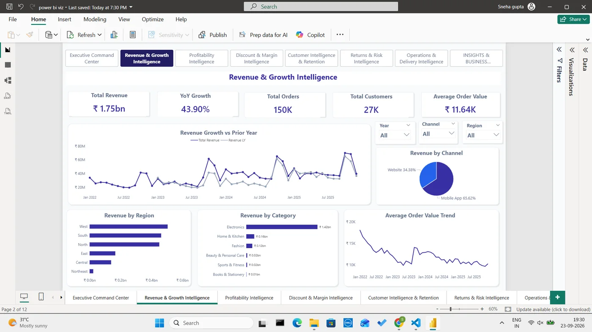
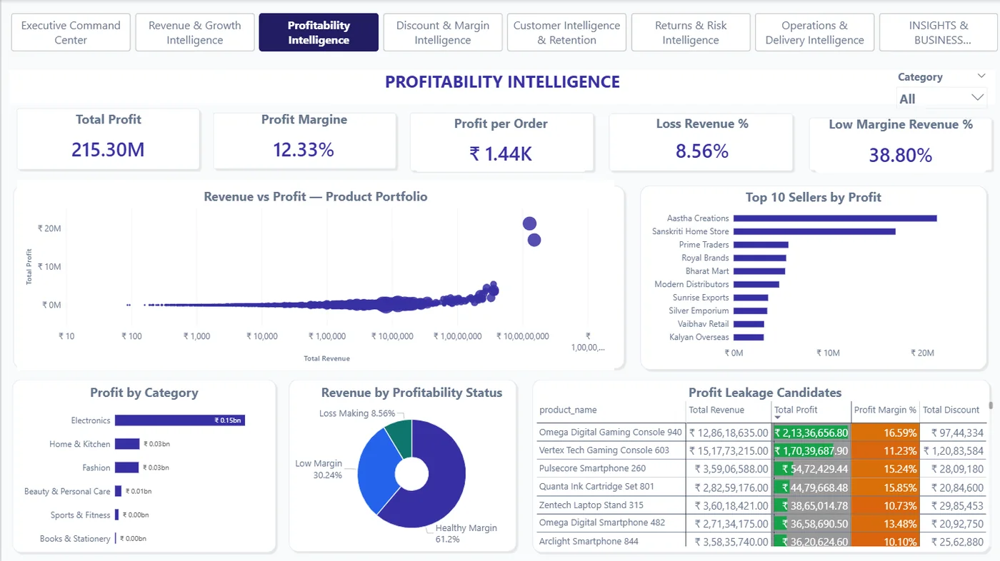
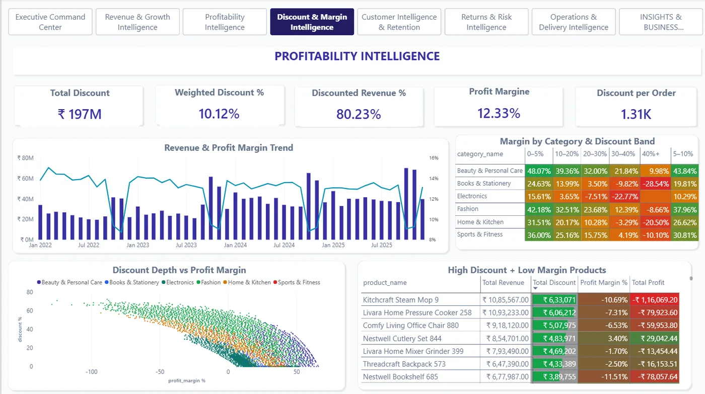
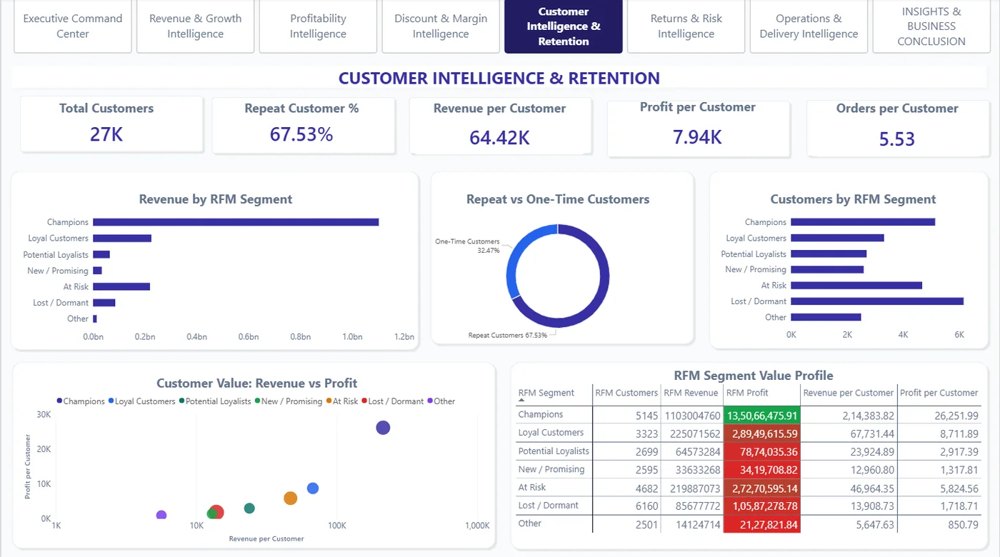
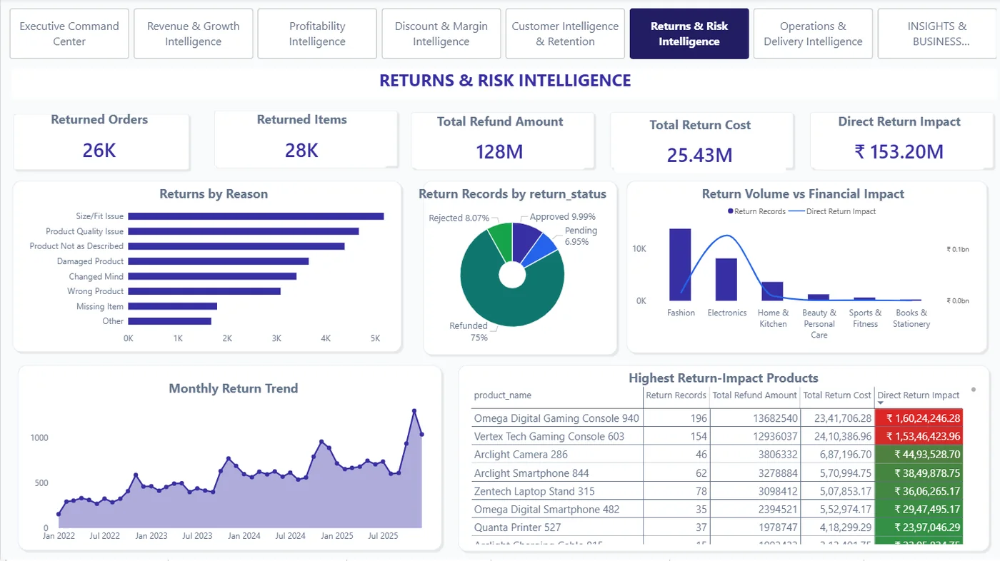
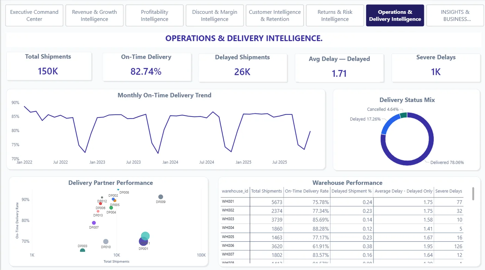
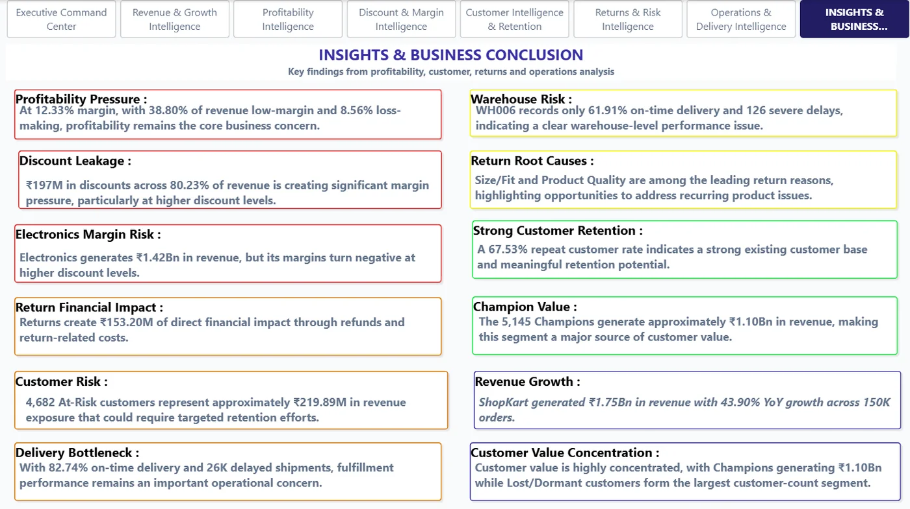

Executive summary
ShopKart India is a synthetic B2C marketplace connecting customers with third-party sellers. I analysed a 12-table relational dataset in PostgreSQL and Python, then built an 8-page Power BI report, to find out why profit wasn't growing as fast as sales.
Revenue is ₹1.75bn, up 43.90% year on year — but profit is only ₹215.30M at a 12.33% margin, with 38.80% of revenue sitting in low-margin territory and 8.56% actively loss-making. The analysis traces this to discount-heavy revenue, product-level returns and delivery delays concentrated in a few warehouses — not to weak sales.
Business problem
Business question: why isn't profitability improving despite strong sales growth — and how much of the revenue is actually sustainable?
Questions investigated
- Which products, categories and sellers earn weak margins?
- Where do discounts help sales, and where do they destroy margin?
- Who creates value, and who is drifting toward churn?
…and the leaks
- How much value is lost to returns and refunds?
- Where are fulfilment and delivery bottlenecks?
- Is growth outpacing revenue quality?
Dataset
12 relational tables covering customers, sellers, products, categories, orders, order items, payments, shipments, returns, warehouses, delivery partners and locations, spanning 2022–2025.
Dataset note: ShopKart is a synthetic marketplace generated for portfolio analysis — the figures demonstrate analytical methodology, not a real company's performance.
Data preparation
Before any analysis, the data was validated rather than assumed clean: row counts, duplicate keys, missing values, key uniqueness, foreign-key integrity, and recalculated revenue, cost, profit and discount figures to confirm they matched their component fields.
Odd values were not deleted automatically — negative item-level profit was kept because it can be a genuine business finding (a loss-making SKU), not a data error.
Data model & SQL architecture
SQL — PostgreSQL
- 26 analysis scripts in 7 topic folders
- Profitability, discount effectiveness, retention & RFM, cohorts, returns, delivery, integrated diagnosis
- Schema, views and a long data-validation script
Power BI — model
- Fact tables: FactSales, FactReturns, shipments
- Eight dimensions including date, customer, product, seller, warehouse and RFM segment
- A dedicated measures table for DAX
RFM segmentation
- Customers scored 1–5 on recency, frequency and monetary value
- Segments: Champions, Loyal, Potential Loyalists, New / Promising, At Risk, Lost / Dormant
- Thresholds are analytical choices, not universal rules
SELECT
CASE
WHEN discount_percent = 0 THEN '0% — No Discount'
WHEN discount_percent <= 10 THEN '1–10%'
WHEN discount_percent <= 20 THEN '11–20%'
WHEN discount_percent <= 30 THEN '21–30%'
WHEN discount_percent <= 40 THEN '31–40%'
ELSE '40%+'
END AS discount_band,
COUNT(DISTINCT order_id) AS total_orders,
SUM(quantity) AS units_sold,
ROUND(SUM(item_revenue), 2) AS revenue,
ROUND(SUM(discount_amount), 2) AS total_discount,
ROUND(SUM(item_profit), 2) AS profit,
ROUND(SUM(item_profit) / NULLIF(SUM(item_revenue), 0) * 100, 2) AS profit_margin_percent
FROM vw_order_item_analysis
GROUP BY 1
ORDER BY MIN(discount_percent);The full query in the repository also returns an effective discount rate; it is trimmed here for readability.
Analytical approach
- 12-table PostgreSQL schema
- Data validation
- SQL analysis (26 scripts)
- Python EDA & stats
- Power BI model + DAX
- 8-page dashboard
- Written insights
Key findings
Business recommendations
Protect margin
- Discount depth could be set against margin, category and demand rather than applied broadly
- High-discount, low-margin products are worth monitoring specifically
- Indicates a shift from “sell more” toward “sell profitably”
Reduce leakage
- At-Risk customers with high historical value could be prioritised for retention
- High-impact returns suggest reviewing SKU descriptions, quality and size/fit information
- Operations attention could focus on WH006 and the lowest-performing delivery partners first
Dashboard showcase
An eight-page report, each page built around one business question. Click a screenshot to enlarge.







Technical implementation
| Tool | Used for |
|---|---|
| PostgreSQL + pgAdmin | Relational modelling, validation and analytical SQL |
| Python (Pandas, NumPy, SciPy, Matplotlib) | Exploratory and statistical analysis |
| Power Query, Power BI, DAX | Data preparation, model and dashboard |
Limitations & assumptions
Worth keeping in mind
- The dataset is synthetic and does not represent real company data.
- Associations are not causation — a link between delays and customer behaviour is not proof that delays caused churn.
- RFM thresholds are heuristic and would need recalibrating on a real business.
- “Direct return impact” is refunds plus return costs; it ignores resale or salvage value, so it is not the full net loss.
Explore the code
The repository separates SQL, Python and Power BI work so each can be reviewed independently.